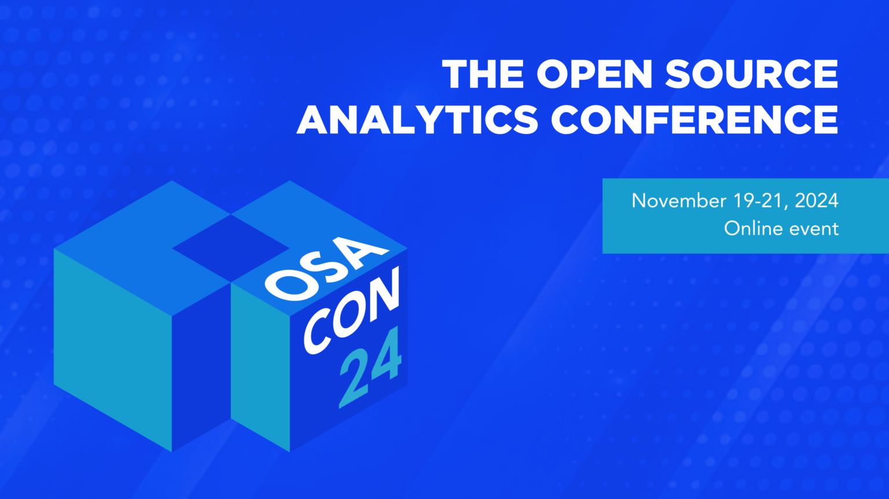

OSA Con 2024: Submit Your Proposals on Open Source Analytics Today!

Open source projects are building blocks for the biggest, fastest, cheapest analytic software on the planet. OSA Con is the vendor-neutral, 100% open conference where developers gather to learn about those projects and the analytic apps that build on them. The 2024 conference runs from 19 to 21 November. The call for papers is open until July 29th. Project roadmaps, industrial applications, new technologies, better vendor models for open source projects, crazy new ideas–all welcome!
What is in store for OSA Con 2024 There’s lots to share at OSA Con 2024. Petabyte-scale datasets are now the starting point–not end state–for analytic apps like observability and security management. Open table formats like Iceberg enable sharing between AI and analytic applications, and big analytic vendors are jumping on the bandwagon. Open source project relicensing continues apace, but foundations are starting to fight back. Kubernetes is pervasive as a runtime for analytic platforms. We’re excited to learn how your projects and applications are navigating these currents.
Accepted talks will join a list of outstanding presentations from industry leaders like Jun Rao from Confluent, Drew Banin from dbt Labs, Ali LeClerc from Presto Foundation, and many others. We are seeking talks that push the envelope on what is possible and provide guidance to developers building industrial analytic apps on open source. Check out the 2023 sessions to get a taste of some of the great topics from the past.
For 2024 we’re sticking with last year’s format of three half days of virtual talks. No pesky travel required! We’re also collaborating once again with Max Beauchemin and Preset, the core committers on Superset. With their help we scaled 2023 signups to over 2000 (4x more than 2022). There’s a thirst for knowledge about open source and analytic apps. With your help we can hit 5000 this year! Join us in 2024. Submit your talk today!
Maybe you want to sponsor as well? This is a chance to get your company on board as a supporter of open source and analytic applications. It’s where the developers are! And it’s wa-a-ay inexpensive. We run the whole thing for the cost of a medium-sized booth at most in-person conferences. Have a look at the sponsorship prospectus and contact us to sign up.
P.S. Need more information or want to sponsor? Email us at hello@osacon.io or join our #osa-conference Slack channel.